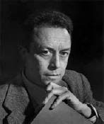

(1913 –1960)

Edebiyat tarihine felsefeci kimliğiyle damgasını vuran Albert Camus çocukluğu I. Dünya Savaşı'nın, gençliği II. Dünya Savaşı'nın pençesinde geçmiş talihsiz kuşağa mensup insanlardandı, yine de yazmayı ve üretmeyi bırakmadı.
Albert Camus (okunuşu: Alber Kamü), 7 Kasım 1913'te Cezayir'de doğdu. Annesi hizmetçilik yapan yarı-İspanyol kökenli bir kadın, babası ise Alsace kökenli yoksul bir çiftçiydi. Babası Lucien, I. Dünya Savaşı'nda piyade alayında görev yaparken 1914'te öldü. Camus, fakir bir ailenin çocuğu olarak zor bir çocukluk dönemi geçirdi. Çocukluğunun büyük bölümü, Cezayir'in Balcourt bölgesinde geçti. 1923 yılında liseyi bitirdikten sonra Cezayir Üniversitesi'nde eğitimine devam etti. Üniversite yıllarında üniversitenin futbol takımında kalecilik yaptı. 1930 yılında vereme yakalanmasından dolayı kalecilik kariyeri ve okul hayatı yarım kaldı.
Okulu bıraktıktan sonra maddi sıkıntılar çekmeye başladı. Özel ders vererek ve meteoroloji enstitüsünde çalışarak geçimini sağladı. 1935 yılında üniversiteye geri döndü ve 1936 yılında Plotinus konulu teziyle Felsefe bölümünden mezun oldu. 1934 yılında, Simone Hie ile evlendi. Karısı morfin bağımlısıydı ve karısının sadakatsizliği yüzünden evlilikleri son buldu.
1934 yılında, Fransız Komünist Partisi'ne katıldı. Partiye katılması Marksist ve Leninist düşüncelerinden çok, İspanya'da olan ve daha sonra iç savaşa dönüşecek politik karışıklıklardan etkilenmesindendi. 1936'da, partinin bağımsız bir kolu olan Cezayir Komünist Partisi'ne geçti. 1937 yılında kendini Stalinist komünizme uzak bulması ve Troçkist suçlamalarıyla partiden uzaklaştırıldı.
1935'te Théatre du Travail'i kurdu, ancak 1939 yılında tiyatro kapandı. Fransa ordusuna katılmak istedi, fakat verem olmasından dolayı kabul edilmedi. 1937 ile 1939 yılları arası, sosyalist yazılar yazdı. 1940 yılında, bir piyanist ve matematikçi olan Francine Faure ile evlendi. Bu evliliğinden 1945 yılında Catherine ve Jean adlarında ikizleri oldu.
II. Dünya Savaşı yıllarında Fransız direniş kuvvetlerine katıldı ve bu direnişin bir parçası olarak Combat adlı bir gazete çıkardı. 1943 yılında, gazeteye editör oldu. Burada yayımlanan en ünlü makalesi Hiroşima'dan iki gün önce yayımlanan Hiroşima'da Atom Bombasının Kullanılışı oldu. 1947 yılında gazete ticari bir yapı kazanınca buradan ayrıldı. Gazetede çalıştığı yıllarda, Jean-Paul Sartre ile tanıştı.
1949 yılında hastalığının nüksetmesi yüzünden 1952'ye kadar çalışmalarına ara verdi. 1951'de düşünce yapısının Sartre'dan tamamen ayrıldığı ve komünist görüşteki insanların tepkilerini çeken L'Homme Révolté'yi yayımladı.
Camus, 50'li yıllarda insan hakları konusuyla aktif olarak ilgilenmeye başladı. 1952'de Birleşmiş Milletler General Franco diktatörlüğündeki İspanya'yı üye olarak kabul edince UNESCO'dan ayrıldı. İdam cezasına karşı çalışmalar düzenledi. "İdam Cezasına Karşı Birlik"in kurucusu Arthur Koestler ile birlikte makale yayımladı. Pasifizmin en önemli savunucularından biriydi.
1954 yılında başlayan Cezayir Kurtuluş Savaşı'nda Fransız hükümetini savundu. Kuzey Afrika'da başlayan isyanın aslında Mısır liderliğindeki Arap emperyalizmi olduğunu ve SSCB'nin planları çerçevesinde gerçekleştiğini düşünüyordu. Cezayir'in özerkliğinden yanaydı. Ölüm cezasına çarptırılan Cezayirlilerin kurtulması için gizlice çalışmalar yaptı. 1955 ve 1956 yıllarında L'Express dergisinde yazdı. 1957 yılında Nobel Edebiyat Ödülü'nü kazandı. Ancak genel kanı bu ödülün Düşüş adlı kitabına değil yazdığı Giyotin Hakkında Düşünceler adlı makalesi için olduğu yönündedir. Rudyard Kipling'den sonra, bu ödülü almış en genç yazardır.
4 Ocak 1960'ta Sens yakınlarında otomobili ile geçirdiği trafik kazası sonucu hayatını kaybetti. Araba kazası sonucu ölmenin en absürd ölüm olduğunu yazan Camus'nün bu şekilde ölmesi oldukça ironiktir. Aynı kazada, arkadaşı ve yayımcısı olan Michel Gallimard da hayatını kaybetti.
Seçme Romanları: Yabancı (1942 – Can Yayınları, 2012), Veba (1947 – Can Yayınları, 2011), Düşüş (1956), Mutlu Ölüm (ölümünden sonra, 1970), İlk Adam (ölümünden sonra, 1995)